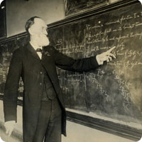
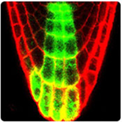

ABOUT THE LIBRARIES
Library Locations
The Ohio Wesleyan University Libraries are teaching libraries, actively supporting and promoting the curriculum, student, and faculty research, and co-curricular activies.
Archives of Ohio
United Methodism
The Archives of Ohio United Methodism is a collection of books, manuscripts, pamphlets, periodicals, artifacts, and other materials organized to encourage the study of the history of United Methodism in Ohio.
- READ MORE »
Government
DocumentsOWU's Beeghly Library has been a federal depository for government publications since 1845. It is one of the oldest continuous federal depository libraries in the United States.
- READ MORE »
Rare Books, Manuscripts, and Artifacts
The Rare Books, Manuscripts and Artifacts collection contains materials demonstrating the various methods human beings have recorded their thoughts and knowledge throughout history.
- READ MORE »
OWU Historical
Collection- 
The historical collection exists to facilitate research related to the history of OWU by acquiring, preserving, and providing supervised access to historically significant materials by, about, or related to OWU constituents.
- READ MORE »
Digital
Collections- 
OWU's Digital Collections include several collections developed in collaboration with students, faculty, and librarians to showcase their unique scholarly contributions.
- READ MORE »
 Twitter
Twitter Facebook
Facebook Flickr
Flickr